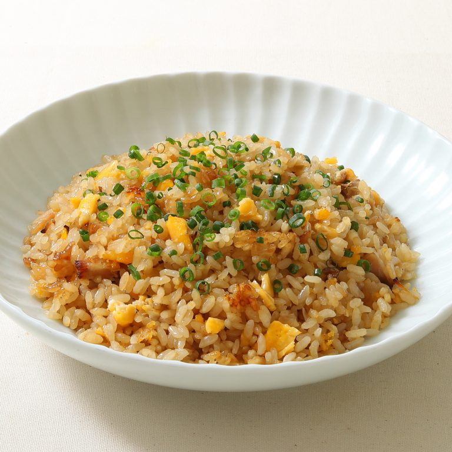
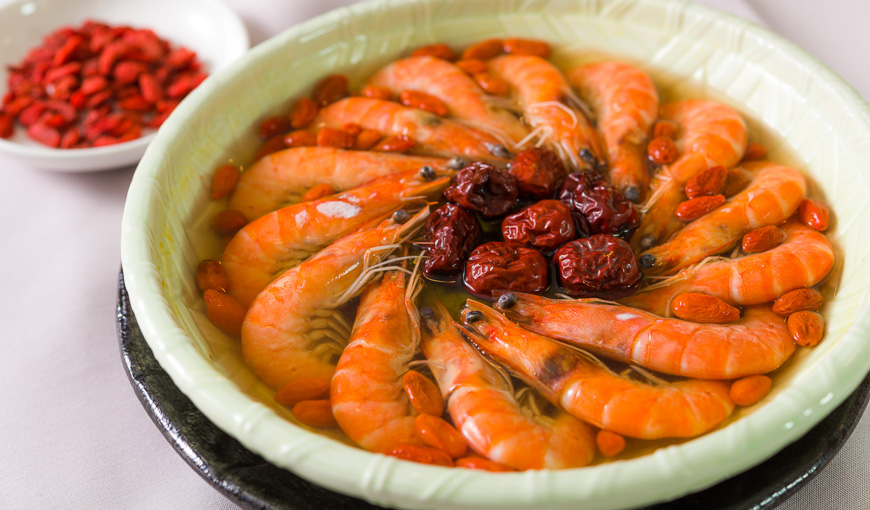
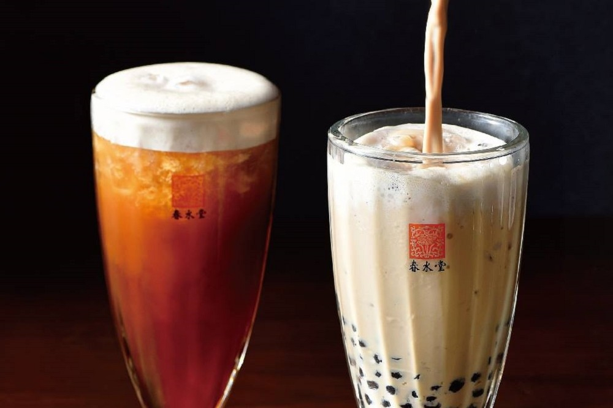

飯類

火腿蛋炒飯
雞丁蛋炒飯
蝦仁蛋炒飯
馬鈴薯咖哩飯
雞排咖哩飯
魚排咖哩飯
牛肉蓋飯
親子丼
茶泡飯
麵類
什錦炒麵
陽春麵
蔥油拌麵
牛肉麵
餛飩湯麵
海鮮湯麵
火腿公仔麵
搶鍋麵
雪菜肉絲麵
海鮮

清蒸鱸魚
糖醋魚丁
鳳梨蝦球
花雕醉蝦
三杯中卷
酥炸魷魚
香炒海瓜子
鹽酥軟殼蟹
蒜蓉蚵仔
飲料
阿薩姆紅茶
茉莉綠茶
焦糖奶茶
拿鐵
義式濃縮
72%摩卡
熱帶水果茶
葡萄柚綠茶
檸檬雪寶
